Mūsu produkcijas piedāvājums
Serdes bērza finieris no divām bez vārpstas lobīšanas līnijām — 1300 mm un 1600 mm — lobīts, žāvēts un manuāli šķirots Jēkabpilī.
Specifikācija
Katra palete tiek izsekota individuāli FSC® procentuālajā un transfēra sistēmā, paralēli veidojam EUDR pienācīgas rūpības (DDS) ziņošanu — un uzņēmumam ir Valsts ieņēmumu dienesta augstākais A reitings par 2025. gadu. Apaļkoki nāk no Latvijas mežiem caur mūsu pašu apaļkoku iepirkšanu.
Pārdošana
Pasūtījumu veikšanai vai jautājumu gadījumā, lūdzu, sazinieties ar mūsu pārdošanas vadītāju:
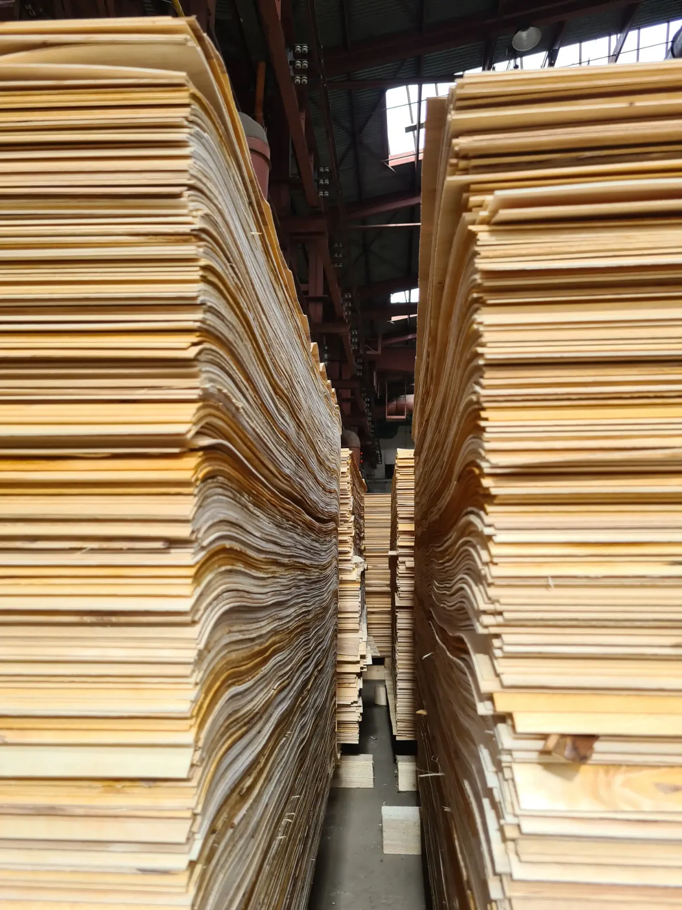
Ražošanas process
Baļķi tiek lobīti divās bez vārpstas līnijās dabīgā mitruma līmenī, bez iepriekšējas mērcēšanas. Biezums un kvalitāte tiek regulāri kontrolēta.
Svaigi lobīts finieris tiek atstāts vismaz uz 48 stundām, lai nodrošinātu vienmērīgu mitruma izlīdzināšanos.
32 metrus garā, četru jostu žāvētava, ko darbina ražošanas blakusprodukts — šķelda, nodrošina nepieciešamo produkta mitruma līmeni.
Katru stundu tiek veiktas pārbaudes, lai nodrošinātu ideālo 4–8% mitruma līmeni.
Katra loksne tiek manuāli pārbaudīta un sašķirota, lai garantētu vienmērīgu kvalitāti.
Noderīgi zināt
Baļķis tiek griezts pret garu nazi, un koksne noloba vienā nepārtrauktā loksnē — kā attinot rulli. Bez vārpstas darbgalds baļķi satver ar piedziņas ruļļiem, nevis centra vārpstām, tāpēc var lobīt līdz ļoti mazam serdeņa diametram — no katra bērza baļķa iegūstot vairāk izmantojama finiera.
Lobītais finieris tiek iegūts nepārtrauktā loksnē apkārt baļķim — plats raksts un pilna izmēra loksnes, standarts saplāksnim un liektā saplākšņa detaļām. Grieztais finieris tiek griezts pa loksnei dekoratīvam virsmas rakstam. Mēs ražojam lobīto serdes finieri.
Tas nozīmē, ka koksne tiek izsekota no atbildīgi apsaimniekotiem mežiem cauri visiem ražošanas posmiem piegādes ķēdes sertifikāta ietvaros. Strādājam gan ar FSC® procentuālo, gan transfēra sistēmu un izsekojam katru paleti individuāli, tāpēc jebkurš pasūtījums var saņemt tam nepieciešamo FSC® marķējumu.
Kvalitāte un šķirošana
| Šķirošanas pazīme | A | B | C | D |
|---|---|---|---|---|
| Mazi zari >3 mm | 3 gab./m² | 3 gab./m² | Atļauts, neierobežoti | Atļauts, neierobežoti |
| Gaiši veselīgi zari | > 3 mm | > 30 mm | Atļauts, neierobežoti | Atļauts, neierobežoti |
| Atvērti caurumi / zari | Nav atļauts | > 10 mm | > 45 mm, 6 gab./m² | > 70 mm, neierobežoti |
| Tumši veselīgi zari | Nav atļauts | > 10 mm | > 45 mm, neierobežoti | > 70 mm, neierobežoti |
| Mizas kabatas | Nav atļauts | Nav atļauts | Nav atļauts | > 50 mm |
| Atvērta plaisa (platums) | Nav atļauts | Nav atļauts | > 5 mm | > 10 mm |
| Atvērta plaisa (garums) | Nav atļauts | Nav atļauts | > 300 mm | > 400 mm |
| Atvērtas plaisas (gab. uz metru) | Nav atļauts | Nav atļauts | Līdz 2 gab./m | Līdz 5 gab./m |
| Krāsas maiņa | Nav atļauts | Līdz 10% loksnes | Atļauts, neierobežoti | Atļauts, neierobežoti |
| Krāsas maiņa no serdes | Nav atļauts | Līdz 10% loksnes | Līdz 30% loksnes | Atļauts, neierobežoti |
| Trupe | Nav atļauts | Nav atļauts | Nav atļauts | Atļauts nelielā apjomā |
| Netīrumi | Nav atļauts | Nav atļauts | Līdz 3% loksnes | Līdz 3% loksnes |
| Nogriezta mala | Nav atļauts | Nav atļauts | Līdz 20 mm | Līdz 50 mm |
Šķiru piemēri
Fotografēts no mūsu pašu šķiru pakām — tabula augstāk, padarīta redzama.
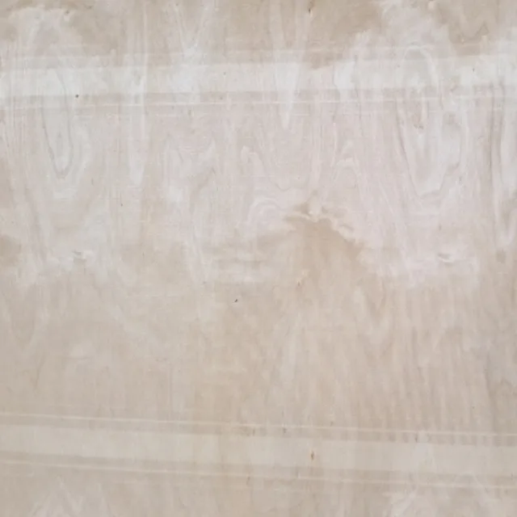
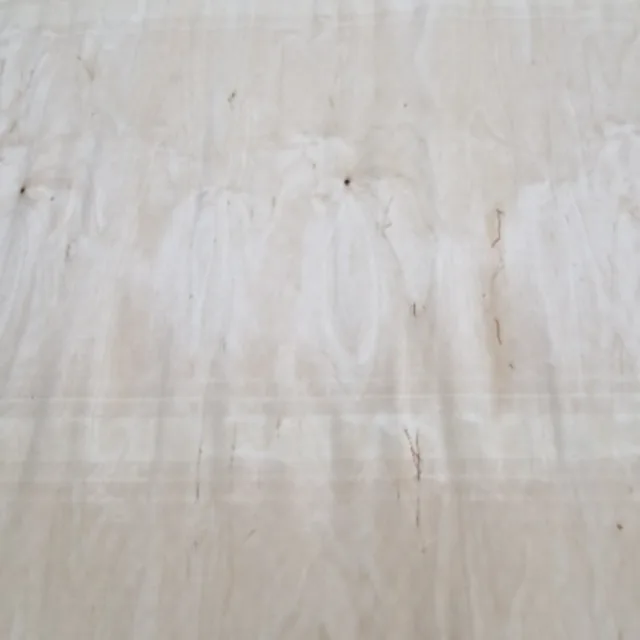
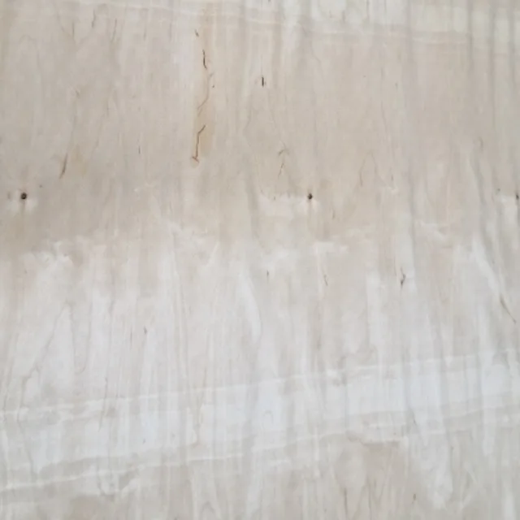
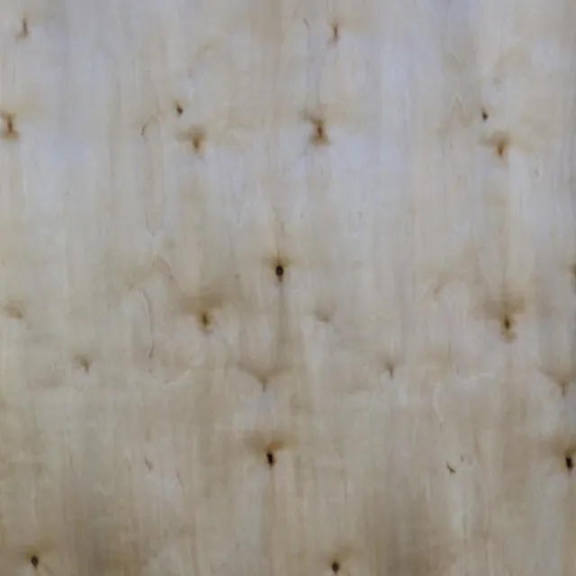
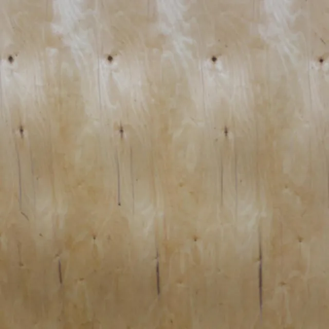
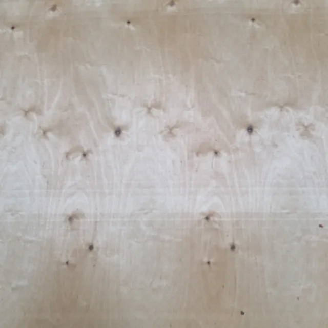
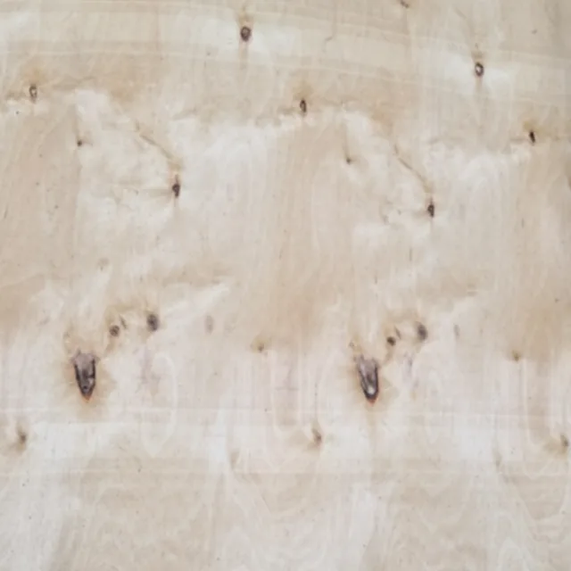
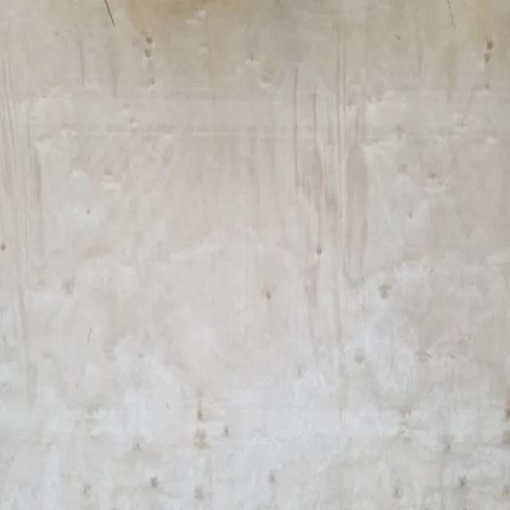
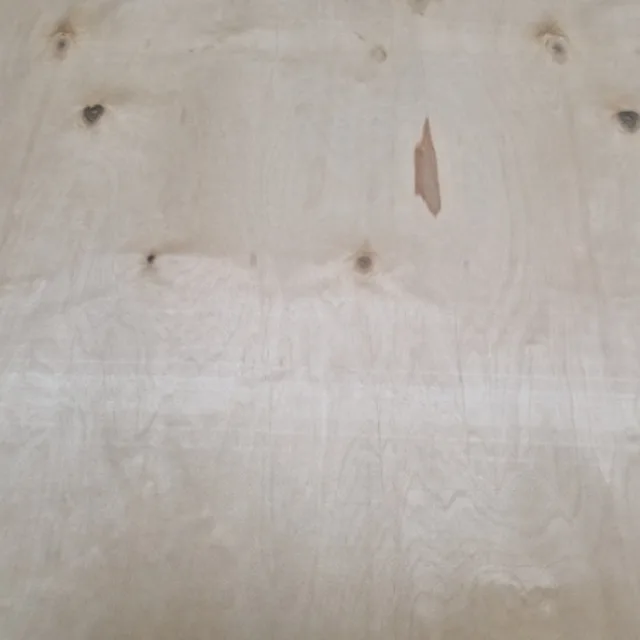
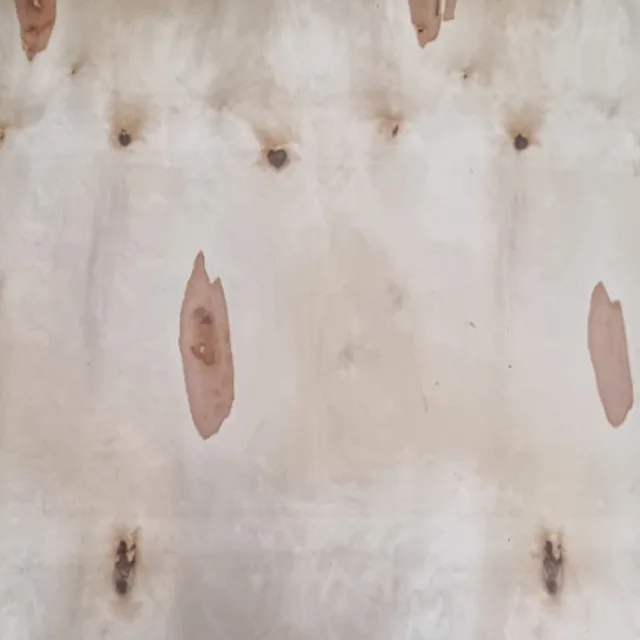
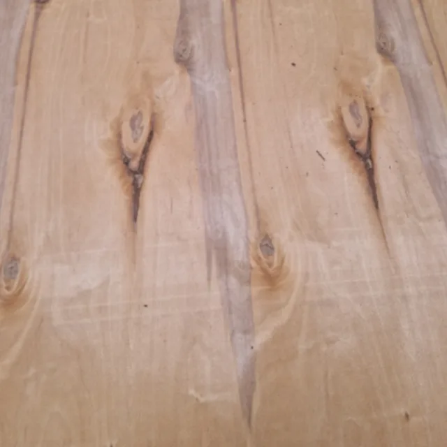
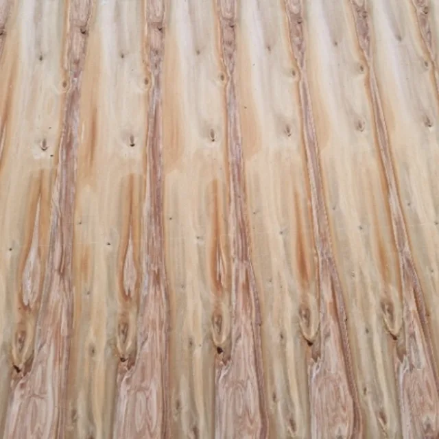
Vēlaties novērtēt savām rokām? — vai izlasiet, kā ražotne tapa, mūsu jaunumos.
Pastāstiet, ko presējat, un mēs nosūtīsim parauga loksni no aktuālās ražošanas partijas.